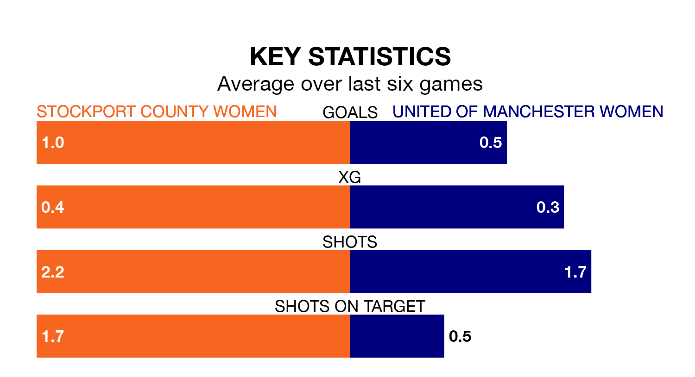

United of Manchester Women make the journey to play Stockport County Women on early Sunday looking to pick up points to end their three-game losing streak.
United of Manchester's struggles have left them with just one point from their last six Women's National League Division One – North matches, while their opponents have earned nine from a possible 18.
United of Manchester are bottom of the table after 15 games, of which they have won one and drawn two, earning five points.
Stockport County are six places ahead of the visitors in sixth, with six wins and six draws putting them on 24 points.
With 11 goals in 15 games so far this season, United of Manchester are the league's lowest scorers with 0.7 goals per game. And they are conceding more than average, letting in 54 goals at a rate of 3.6 per game.
The home side are also below average scorers, with 1.3 goals per game, compared to a league average of 1.6. They have conceded 0.9 goals per game.
In the last three years, Stockport County and United of Manchester have played each other on three occasions. Stockport County won two of them and they drew once.
Their last meeting was on October 8, when Stockport County won 2-0 away.
Stockport County's last match was on February 20, a 1-1 draw against Barnsley Women.
United of Manchester lost 3-2 against Norton and Stockton last time out, on March 3.
Updated: 09:34 (UTC), 08/03/24